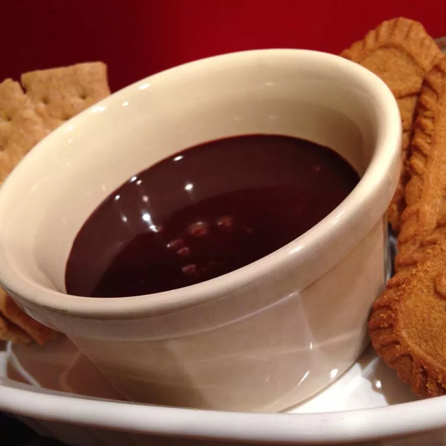

Midnight Nutella Dip

Description:
A go-to sweet late night snack that is quick and simple. Recommended to go with soft pretzels and milk.
Ingredients:
- 5 tablespoons Nutella
- 2 tablespoons milk
- 1 teaspoon honey
- 1/4 teaspoon vanilla extract
Directions:
- Combine Nutella, milk, honey, and vanilla extract in a small microwave-safe container
- Heat in microwave for one minute
- Stir the dip with a toothpick until somewhat smooth; let it cool for two minutes before eating